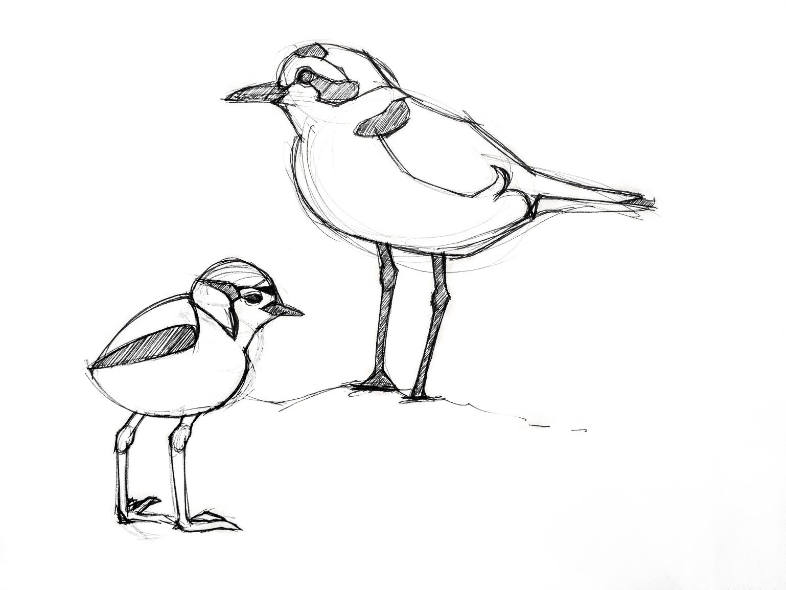

Design a poster with the animal you previously chose. The poster must incorporate a tagline with the first letter of your animal's species, along with a short description. Both the description and the graphics in the poster itself should reflect reason(s) why your animal is endangered.

